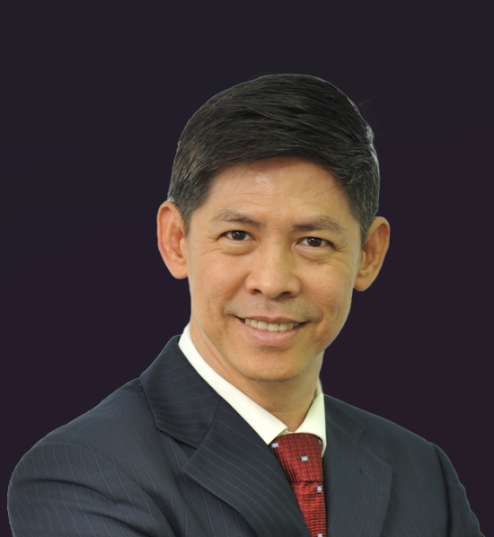
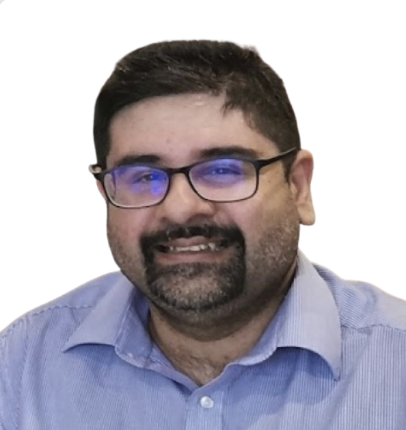

Ps Winston Chew
"I believe God is not finished with any of us."
That conviction did not begin in a seminary classroom or a corporate training room. It began on an oil-palm estate in Teluk Intan, when I was sixteen years old — a boy working through a ten-lesson Bible correspondence course, quietly and without fanfare, until the Holy Spirit did what only He can do. By the final lesson, I had given my life to Jesus Christ. I have never looked back — though the road has not always gone in the direction I expected.
Three years later, a burden for 500 unreached villages across Malaysia would not leave me alone. I resigned from a steady job and joined the first batch of the Village and Film Ministry. I was nineteen, and I had no idea what God was beginning. What I did know was this: when God places something in your heart that will not leave, the only honest response is to follow it.
That has been my theology ever since. Not a theology I learned first from books — though books have shaped me — but one I have lived through pastoral ruptures, personal failures, seasons of silence, and the slow, costly, merciful work of being put back together by a God who does not give up on the people He has called.
I believe in a God who is personal — who knows our name, our history, and the emotional life we carry into every room we enter. I believe that faith is not merely intellectual assent but the daily surrender of our interior life to the One who made it. I believe the Great Commandment — to love God, to love ourselves honestly, and to love others faithfully — is not a theological abstraction. It is the shape of a whole life, and becoming that person is the work of a lifetime.
My passion is people — the ones who are struggling to close the gap between what they believe and who they are becoming. I have sat with leaders in boardrooms and broken people in counselling rooms, and what I have found is the same in both places: we all need a grace that goes deeper than our performance and a truth that tells us the real story about ourselves.
After three decades of pastoral ministry, counselling, and corporate training impacting peoples from more than twenty different countries, I am still learning. I am still being changed. And I am still as convinced as I was at sixteen that the life offered to us in Christ is the richest, most demanding, most freeing life available to any human being.
If you would like to explore what that life looks like — in your faith, your relationships, your emotional world, or your leadership — I would be glad to sit with you and find out what God is already doing in your story.
Ps Winston is the author of Emotionally Whole: From the Mirror to the Door. Visit www.emotionallywhole.com to learn more.
Ps Victoria Chew
"Souls matter to me — and that passion has shaped everything about the way I live and minister."
For forty years, I have walked with the Lord through valleys and over mountains, and I will tell you without hesitation: every step of that journey has been worth it. The seasons of testing deepened my faith; the seasons of blessing enlarged my gratitude. Together, they have formed in me a life that is still being transformed, day by day, by the Spirit of God.
My heart beats for the lost. Evangelism is not merely something I do — it is who I am. Alongside that, I carry a tender love for children, investing in them through discipleship and the kind of genuine, unhurried engagement that makes young hearts feel seen and valued.
I am also deeply committed to the women I walk alongside, bringing both pastoral care and practical wisdom into that ministry. And wherever I go, hospitality follows — making people feel welcomed and at home is a gift I hold with gratitude and joy.
To walk with Christ for forty years is to discover, again and again, that there is no richer life to be found. In His strength, through every valley and up every mountain, I can say with full conviction — I am truly blessed.
Madam Irene Teh
"Twenty-nine years ago, I came to know Jehovah — and nothing has been the same since."
When I first came to Him, I was impulsive, deeply insecure, and constantly longing to be understood, accepted, and loved. I carried with me a quiet, persistent ache — the fear that I was not enough, that I would never quite belong. But what I discovered in Jehovah stopped me in my tracks: He never once rejected me. He accepted me as I was, cared for me as I needed, and began — slowly, faithfully, tenderly — to change me from the inside out.
He taught me something that took years to fully receive: my worth is not measured by how others see me, but by how He sees me. That single truth rewired the way I live. It freed me to listen rather than defend, to be patient rather than reactive, and to learn — gradually, imperfectly — how to love and care for others the way He had loved and cared for me.
Looking back across twenty-nine years, the distance between who I was and who I am today is not something I can take credit for. It is entirely His work. I was someone who met every difficulty with "I don't want to. I can't do it." Today, I meet challenges with something different — a quiet resolve that says, I can give it a try. Not because I am stronger, but because I know I am not alone. The Holy Spirit walks with me, and that changes everything.
Again and again, He has called me out of my comfort zone. Again and again, I have taken the step — and found Him faithful on the other side.
I am still learning. I am still changing. I still have so much growing to do. But I believe with everything in me that as long as I remain willing to let Jehovah guide me, He will continue to form in me a life that is more mature, more gentle, and more loving than the one I brought to Him thirty-one years ago.
This is who I am today — a woman still being shaped, still being surprised by grace, and still, after all these years, deeply grateful.
Dr. Yeong Lee Seng
A personal bio for Dr. Yeong Lee Seng will be added here soon.

Dr. Luke Teshkumar
A personal bio for Dr. Luke Teshkumar will be added here soon.